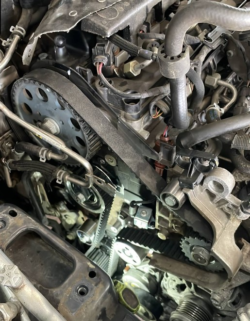
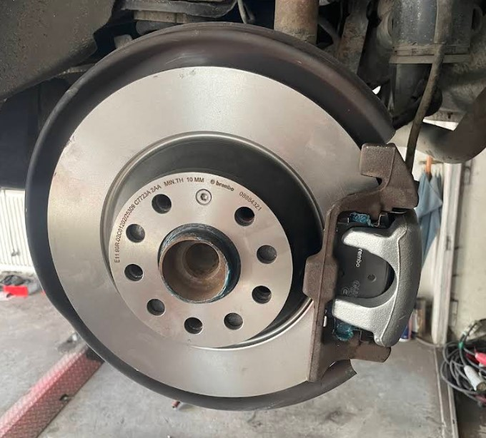
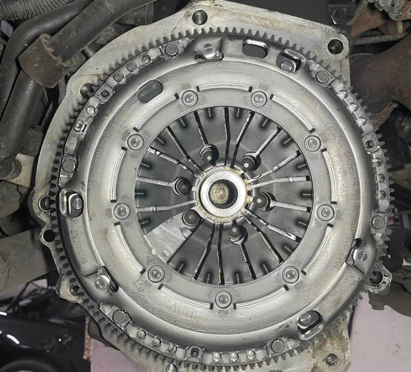
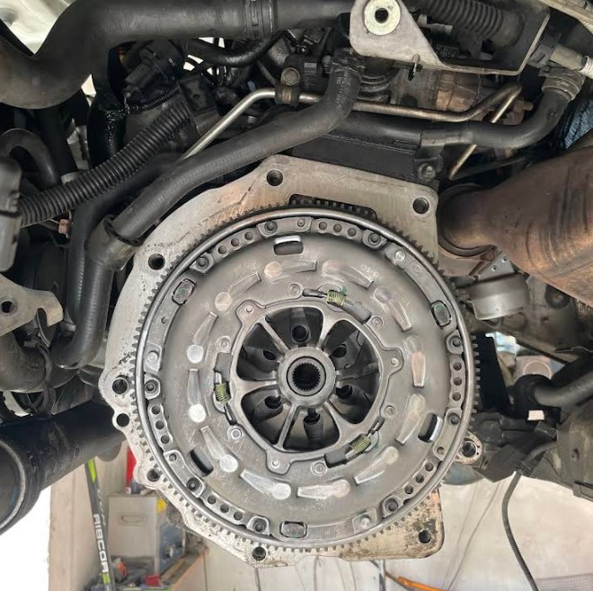
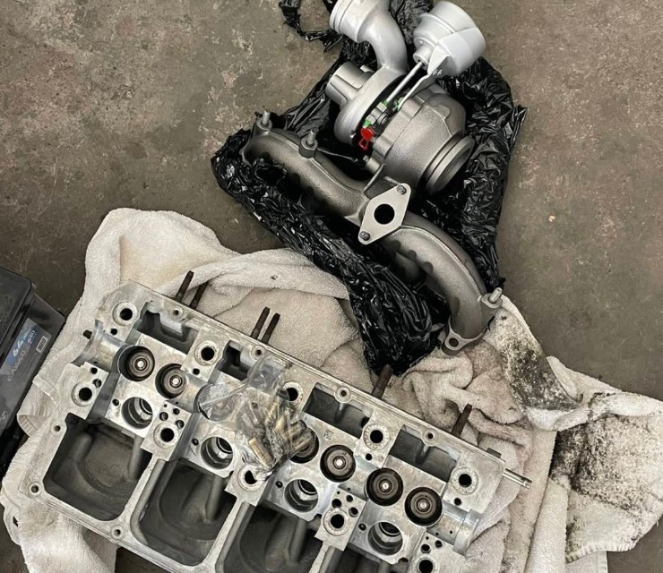

O nás
Vítáme vás v Autoservisu Miloslav Jouza v Libušíně u Kladna (Důl Max). Poskytujeme kompletní servisní a opravárenské práce pro osobní i užitková vozidla všech značek.
Stavíme na poctivém řemesle, lidském a férovém přístupu, rychlém vyřízení a rozumných cenách. Ať už potřebujete pravidelnou výměnu oleje, nové brzdy, rozvody, spojku nebo spolehlivě zařídit technickou kontrolu (STK), rádi se o váš automobil postaráme.
Naše služby

Běžný servis a údržba
- Pravidelné servisní prohlídky automobilů
- Výměna motorového oleje a všech filtrů (olejový, vzduchový, palivový, kabinový)
- Výměna a kontrola provozních kapalin (chladicí, brzdová)
- Výměna autobaterií, zapalovacích svíček a žárovek
Brzdové systémy a podvozky
- Kompletní servis brzd (výměna kotoučů a brzdových destiček)
- Repase a údržba brzdových třmenů
- Opravy podvozkových částí (čepy, ramena, silentbloky, tlumiče a pružiny)
Opravy motorů, rozvodů a spojek
- Výměna rozvodových sad včetně kladek a vodních pump
- Výměna spojkových sad a dvouhmotových setrvačníků
- Opravy hlav motoru, přetěsnění a výměna turbodmychadel
- Komplexní mechanické opravy agregátů
Zajištění STK a autodiagnostika
- Příprava vozu na technickou kontrolu a emise
- Rychlé a kompletní vyřízení STK bez starostí
- Autodiagnostika elektronických systémů vozidla
Ukázky naší práce




Hodnocení zákazníků
Filipespes 20
2 recenze · před 7 měsíci"Potřeboval jsem rychle zařídit technickou kontrolu a všechno proběhlo naprosto bez problémů. Domluva byla rychlá a jasná, auto jsem přivezl v neděli a už v pondělí bylo hotové. Oceňuji hlavně vstřícnost, spolehlivost a rychlost vyřízení. Skvělá komunikace a profesionální přístup – určitě doporučuji."
Michal Musil
2 recenze · před 9 měsíci"Skvělá, rychlá a kvalitní práce. Napsal jsem v neděli večer mezi svátky s problémem a v úterý jsem měl auto plně pojízdné a k tomu dále vyřešené oleje, filtry, brzdy. Určitě se zase vrátím"
Darina Petrášková
Místní průvodce · 3 recenze · před rokem"Skvělý mechanik, jsem moc spokojená. Oprava byla hotová rychle, vše proběhlo bez problémů a za rozumnou cenu. Je vidět, že tomu rozumí a práce ho baví. Určitě se ráda vrátím, když bude potřeba něco dalšího opravit. Doporučuji!"
Zdenek Petrášek
2 recenze · 1 fotka · před rokem"Skvělý mechanik. Rychlá a spolehlivá domluva, vše proběhlo bez problémů. Práce vždy perfektně odvedená, s důrazem na detail a kvalitu. Férové jednání, profesionální přístup a skutečná znalost řemesla. Doporučuji všem, kdo hledají spolehlivého mechanika."
Jana Krajícová
3 recenze · před rokem"Skvělý, milý a především lidský přístup😊 vždy rychle a dobře odvedená práce! Mohu jen doporučit!😇"
Jakub Nosek
4 recenze · 4 fotky · před 2 lety"Několikrát jsem již využil služeb tohoto autoservisu. Mohu jen doporučit, práce vždy rychle hotová, ceny příjemné a vždy jsem byl spokojen. Auta už vozím pouze sem."
Ceník
Ceny služeb jsou dle domluvy.